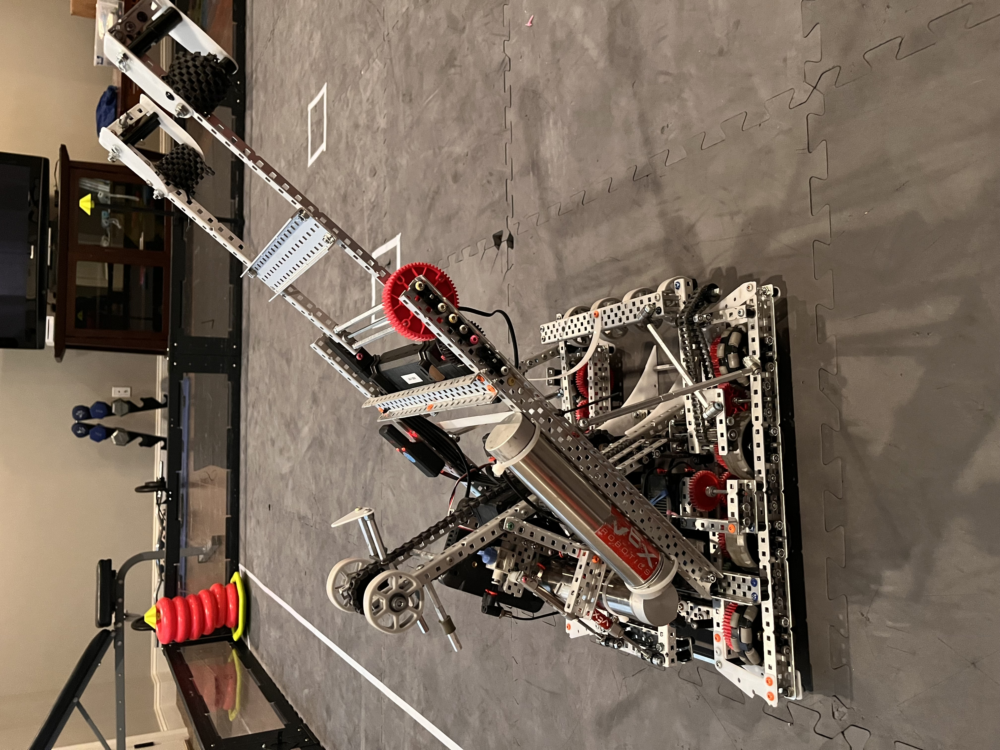
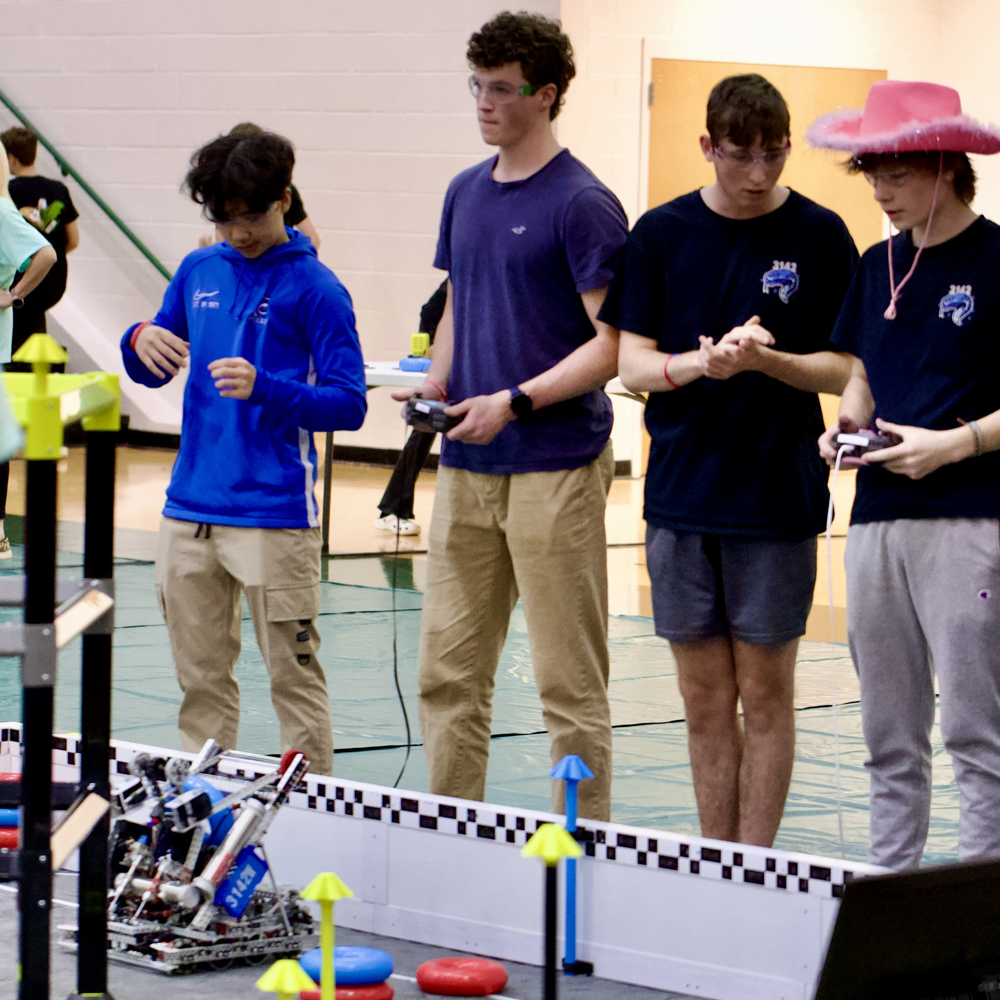
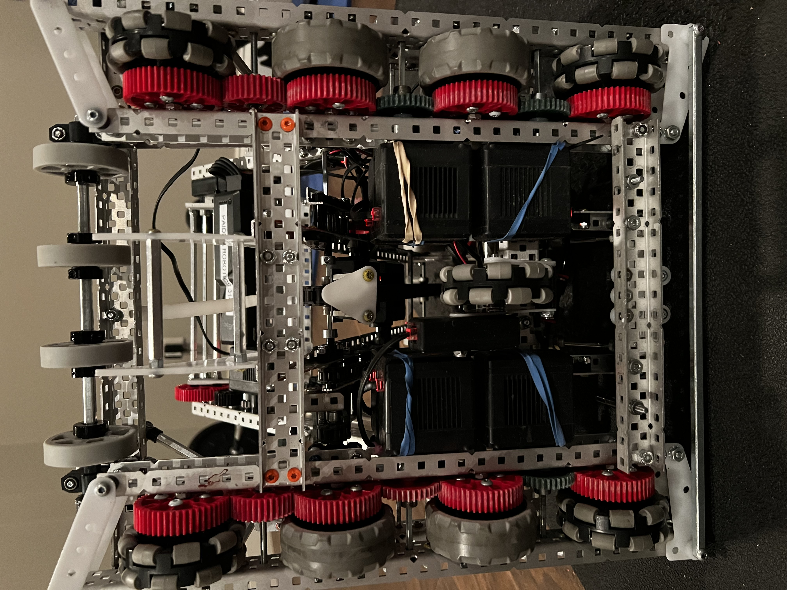
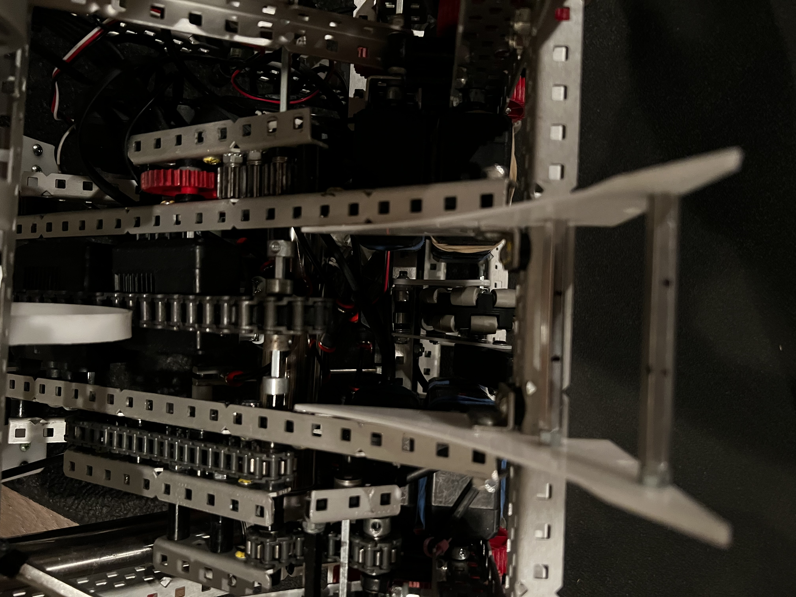

Project
VEX Robotics
2024–25 Season
Over the course of the 2024–25 VEX Robotics season, our team designed, built, and iteratively refined a competitive robot capable of scoring rings on mobile goals, clamping field elements, and operating autonomously — ultimately qualifying for the VEX Robotics World Championship.
Final Build
The final robot represented the culmination of three major build iterations and dozens of hours of prototyping, testing, and refinement. Every challenge encountered throughout the season directly informed the final design — resulting in a robot that was mechanically robust, strategically capable, and competition-ready.
Key achievements included an omnidirectional pneumatic clamp capable of securing the octagonal base of mobile goals regardless of approach orientation. Autonomous navigation relied on a precisely tuned vertical odometry system. The ring intake was powered by a dual-motor chain connected via a unified chain route to flex wheels. A wallstake scoring mechanism was integrated with a compact motor concealed behind the battery.
- ClampOmnidirectional pneumatic — fits any goal orientation
- AutonomousVertical odometry tracking
- Ring IntakeDual-motor chain with flex wheels
- Wallstake MechanismCompact motor hidden behind battery
Final Build Gallery




